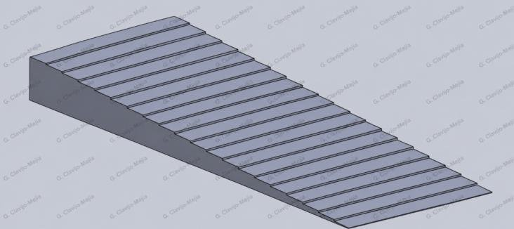
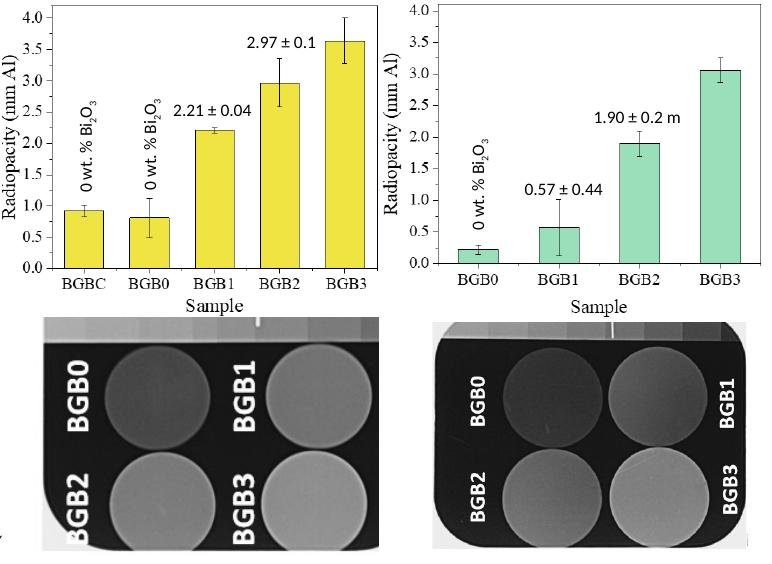
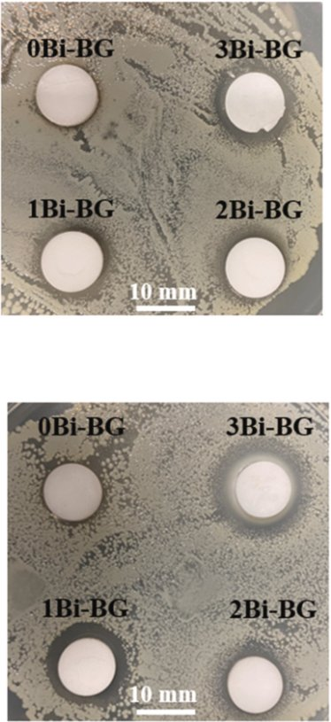
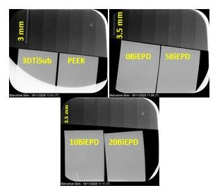
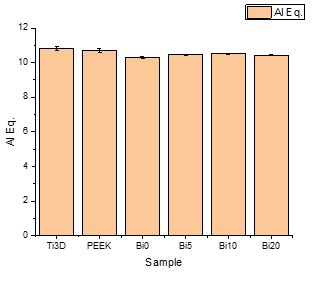

RadiopacityRadiopacidad
Radiographs show how much X-ray contrast bismuth adds to the glasses and to the coated titanium alloy.Las radiografías muestran cuánto contraste de rayos X aporta el bismuto a los vidrios y a la aleación de titanio recubierta.
How we measure itCómo lo medimos
A dental X-ray unit images each sample next to an aluminium step wedge with 20 steps of 0.5 mm. The protocol follows the comparison principle of ISO 13116 and uses 60 kV, 4 mA, 0.12 s and a 10 cm source-to-sensor distance. ImageJ converts the grey value of each sample into an equivalent thickness of aluminium (mm Al).Un equipo de rayos X dental obtiene la imagen de cada muestra junto a una cuña escalonada de aluminio de 20 escalones de 0,5 mm. El protocolo sigue el principio de comparación de la ISO 13116 y usa 60 kV, 4 mA, 0,12 s y 10 cm entre fuente y sensor. ImageJ convierte el valor de gris de cada muestra en un espesor equivalente de aluminio (mm Al).



Glass pelletsPastillas de vidrio





CoatingsRecubrimientos
| CoatingRecubrimiento | GlassVidrio | Titanium alloy aloneAleación de titanio sola | CoatedRecubierto | GainGanancia |
|---|---|---|---|---|
| APS | Bi-45S5 | 4.9 mm Al | 6.6 mm Al | +1.7 mm Al |
| APS | Bi-13-93B3 | 5.9 mm Al | 8.2 mm Al | +2.3 mm Al |
| Spray coating | Bi-45S5 | 5.5 mm Al | 7.5 mm Al | +2.0 mm Al |
| Spray coating | Bi-13-93B3 | 5.5 mm Al | 7.2 mm Al | +1.7 mm Al |
| EPD | PEEK/Bi-13-93B3 | Thick substrates (3–3.5 mm) masked the coating contribution.Los sustratos gruesos (3–3,5 mm) enmascararon la contribución del recubrimiento. | ||





Thin substrates keep the combined substrate and coating signal within the calibrated range of the step wedge.Los sustratos delgados mantienen la señal conjunta de sustrato y recubrimiento dentro del rango calibrado de la cuña.
Plasma sprayProyección por plasmaSpray coatingSpray coatingElectrophoretic depositionDeposición electroforética